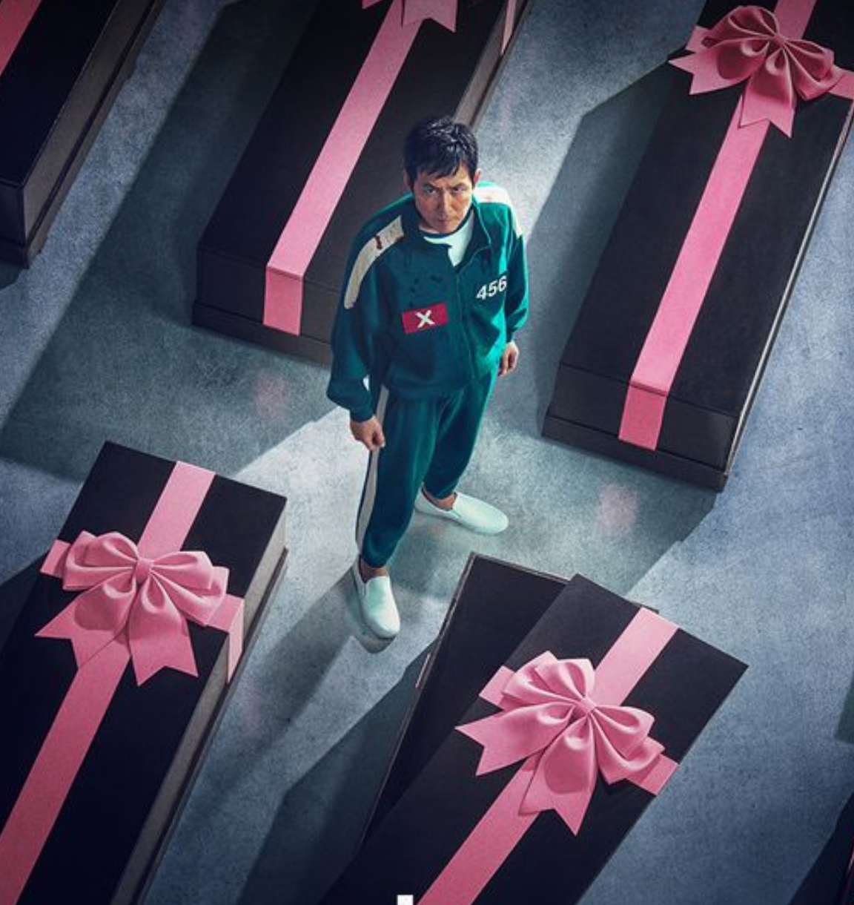
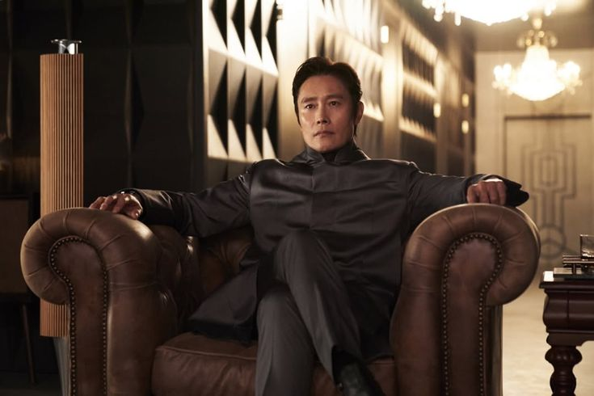

Squid Game is a survival drama series where hundreds of financially struggling people are invited to compete in a mysterious contest.
They play traditional childrens games, but with a deadly twist—losing means death. As the competition progresses,
the players must make difficult choices, form alliances, and sometimes betray each other just to survive. The ultimate goal is to win a massive cash prize,
but the cost is risking their lives. The series highlights themes such as greed, social inequality, desperation,
and how far people are willing to go when pushed to their limits.

The Front Man is the masked leader in Squid Game who controls and oversees the deadly games.
He enforces the rules, manages the guards,
and ensures everything runs smoothly. Calm and strict,
he shows little emotion and believes in keeping the games “fair,” despite their deadly nature.